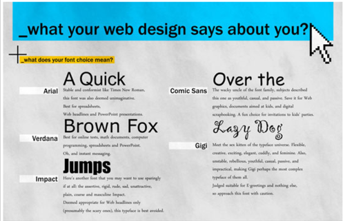

Mon, 29 Nov 2010 23:04:00 · web · webdesign · design · infographic
Infographic: What your web design says about you

Like it or not, every choice matters when it comes to designing a website. You will be judged not only by the layout or how cool the design is, but also the type of fonts you’re using, and why you choose one colour over another.
Oh and let’s not forget the interaction part and the technology you choose to build your site. Still using Flash? Well, have you heard of HTML 5? Just sayin’…
Read more, and see the full size Infographic here.